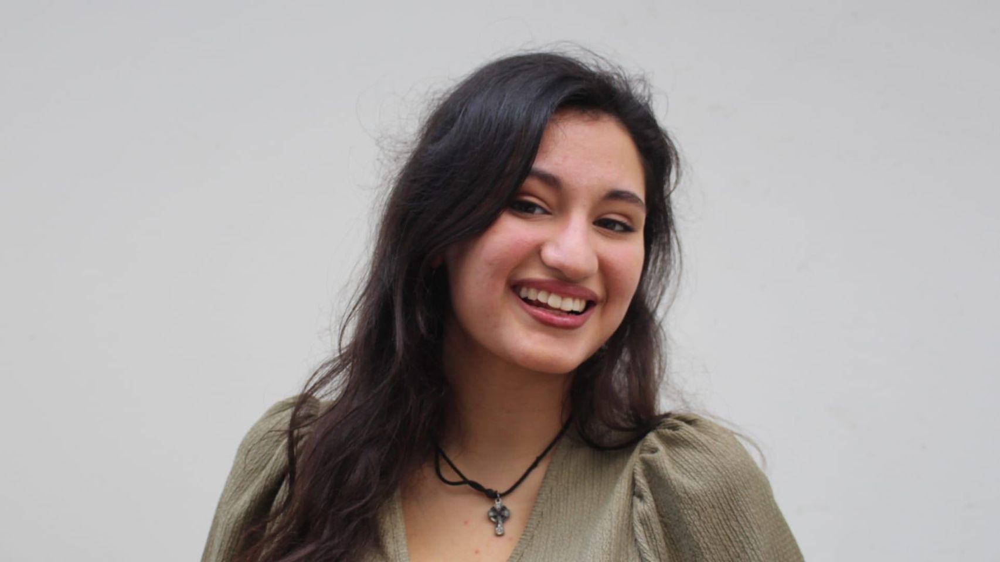

Una nueva etapa musical. Un single propio producido por Mirza Redžepagić, con un equipo que conecta los Balcanes y Brasil.
Escuchar en plataformas ↗
03 — SU HISTORIA
Raíces gallegas.
Alma balcánica.
Laura Marín es una cantante y compositora de A Coruña. Descubrió la música balcánica durante su infancia y aprendió serbocroata por iniciativa propia para entender e interpretar las canciones que la habían cautivado.
Sus versiones acústicas dieron a conocer su voz en las redes. En 2023 llegó a un escenario emblemático: la Zetra de Sarajevo, como invitada de Halid Bešlić. Hoy su camino incluye canciones propias como «Uslišana molitva» y «Brza kola».
Conoce su historia en EL PAÍS ↗